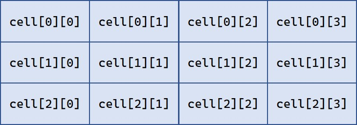

Functions¶
The following are miscellaneous functions and attributes on a fairly low-level technical detail.
Some functions provide detail access to PDF structures. Others are stripped-down, high performance versions of other functions which provide more information.
Yet others are handy, general-purpose utilities.
Function |
Short Description |
|---|---|
|
PDF only: bbox of the appearance object |
|
PDF only: the matrix of the appearance object |
check whether contents wrapping is present |
|
list of glyph names defined in Adobe Glyph List |
|
list of unicodes defined in Adobe Glyph List |
|
PDF only: clean the annot’s |
|
|
PDF only: set the bbox of the appearance object |
|
PDF only: set the matrix of the appearance object |
return header string for get_text methods |
|
return trailer string for get_text methods |
|
PDF only: remove XML metadata |
|
PDF only: return a list of glyph widths of a font |
|
PDF only: create and return a new |
|
PDF only: check whether an |
|
PDF only: return XML metadata |
|
PDF only: return length of |
|
return the (standard) empty / invalid rectangle |
|
return the (standard) empty / invalid quad |
|
return the (standard) empty / invalid rectangle |
|
return the current timestamp in PDF format |
|
return PDF-compatible string |
|
return string length for a given font & |
|
return unicode from a glyph name |
|
return a dictionary of basic image properties |
|
return the (only existing) infinite rectangle |
|
return the (only existing) infinite quad |
|
return the (only existing) infinite rectangle |
|
split rectangle in sub-rectangles |
|
PDF only: clean the page’s |
|
list of rectangles that envelop text, drawing or image objects |
|
PDF only: return a list of content |
|
create the page’s display list |
|
extract text blocks as a Python list |
|
extract text words as a Python list |
|
low-level text information |
|
PDF only: get complete, concatenated /Contents source |
|
run a page through a device |
|
wrap contents with stacking commands |
|
create CSS source for a font in package pymupdf_fonts |
|
return rectangle for a known paper format |
|
return width, height for a known paper format |
|
dictionary of pre-defined paper formats |
|
matrix to map a line to the x-axis |
|
compute the quad of a char (“rawdict”) |
|
compute the quad of a subset of line spans |
|
compute the quad of a span (“dict”, “rawdict”) |
|
compute the quad of a subset of span characters |
|
set destination of PyMuPDF messages. |
|
return PDF RGB color tuple from an sRGB integer |
|
return (R, G, B) color tuple from an sRGB integer |
|
return glyph name from a unicode |
|
locates the language support of the Tesseract-OCR installation |
|
dictionary of available supplement fonts |
|
destination of PyMuPDF messages. |
|
dictionary of almost 500 RGB colors in PDF format. |
- paper_size(s)¶
Convenience function to return width and height of a known paper format code. These values are given in pixels for the standard resolution 72 pixels = 1 inch.
Currently defined formats include ‘A0’ through ‘A10’, ‘B0’ through ‘B10’, ‘C0’ through ‘C10’, ‘Card-4x6’, ‘Card-5x7’, ‘Commercial’, ‘Executive’, ‘Invoice’, ‘Ledger’, ‘Legal’, ‘Legal-13’, ‘Letter’, ‘Monarch’ and ‘Tabloid-Extra’, each in either portrait or landscape format.
A format name must be supplied as a string (case in sensitive), optionally suffixed with “-L” (landscape) or “-P” (portrait). No suffix defaults to portrait.
- Parameters:
s (str) – any format name from above in upper or lower case, like “A4” or “letter-l”.
- Return type:
tuple
- Returns:
(width, height) of the paper format. For an unknown format (-1, -1) is returned. Examples: pymupdf.paper_size(“A4”) returns (595, 842) and pymupdf.paper_size(“letter-l”) delivers (792, 612).
- paper_rect(s)¶
Convenience function to return a Rect for a known paper format.
- Parameters:
s (str) – any format name supported by
paper_size().- Return type:
- Returns:
pymupdf.Rect(0, 0, width, height) with width, height=pymupdf.paper_size(s).
>>> import pymupdf >>> pymupdf.paper_rect("letter-l") pymupdf.Rect(0.0, 0.0, 792.0, 612.0) >>>
- set_messages(*, text=None, fd=None, stream=None, path=None, path_append=None, pylogging=None, pylogging_logger=None, pylogging_level=None, pylogging_name=None)¶
Sets destination of PyMuPDF messages to a file descriptor, a file, an existing stream or Python’s logging system.
Usually one would only set one arg, or one or more
pylogging*args.
- Parameters:
text (str) – A text specification of destination; for details see description of environmental variable
PYMUPDF_MESSAGE.fd (int) – Write to file descriptor.
stream – Write to existing stream, which must have methods
.write(text)and.flush().path (str) – Write to a file.
path_append (str) – Append to a file.
pylogging – Write to Python’s
loggingsystem.pylogging_logger (logging.Logger) – Write to Python’s
loggingsystem using specified Logger.pylogging_level (int) – Write to Python’s
loggingsystem using specified level.pylogging_name (str) – Write to Python’s
loggingsystem using specified logger name. Only used ifpylogging_loggeris None. Default ispymupdf.If any
pylogging*arg is not None, we write to Python’s logging system.
- sRGB_to_pdf(srgb)¶
New in v1.17.4
Convenience function returning a PDF color triple (red, green, blue) for a given sRGB color integer as it occurs in
Page.get_text()dictionaries “dict” and “rawdict”.
- Parameters:
srgb (int) – an integer of format RRGGBB, where each color component is an integer in range(255).
- Returns:
a tuple (red, green, blue) with float items in interval 0 <= item <= 1 representing the same color. Example
sRGB_to_pdf(0xff0000) = (1, 0, 0)(red).
- sRGB_to_rgb(srgb)¶
New in v1.17.4
Convenience function returning a color (red, green, blue) for a given sRGB color integer.
- Parameters:
srgb (int) – an integer of format RRGGBB, where each color component is an integer in range(255).
- Returns:
a tuple (red, green, blue) with integer items in
range(256)representing the same color. ExamplesRGB_to_pdf(0xff0000) = (255, 0, 0)(red).
- glyph_name_to_unicode(name)¶
New in v1.18.0
Return the unicode number of a glyph name based on the Adobe Glyph List.
- Parameters:
name (str) – the name of some glyph. The function is based on the Adobe Glyph List.
- Return type:
int
- Returns:
the unicode. Invalid name entries return
0xfffd (65533).Note
A similar functionality is provided by package fontTools in its agl sub-package.
- unicode_to_glyph_name(ch)¶
New in v1.18.0
Return the glyph name of a unicode number, based on the Adobe Glyph List.
- Parameters:
ch (int) –
the unicode given by e.g.
ord("ß"). The function is based on the Adobe Glyph List.- Return type:
str
- Returns:
the glyph name. E.g.
pymupdf.unicode_to_glyph_name(ord("Ä"))returns'Adieresis'.Note
A similar functionality is provided by package fontTools: in its agl sub-package.
- css_for_pymupdf_font(fontcode, *, CSS=None, archive=None, name=None)¶
New in v1.21.0
Utility function for use with “Story” applications.
Create CSS
@font-faceitems for the given fontcode in pymupdf-fonts. Creates a CSS font-family for all fonts starting with string “fontcode”.The font naming convention in package pymupdf-fonts is “fontcode<sf>”, where the suffix “sf” is one of “” (empty), “it”/”i”, “bo”/”b” or “bi”. These suffixes thus represent the regular, italic, bold or bold-italic variants of that font.
For example, font code “notos” refers to fonts
“notos” - “Noto Sans Regular”
“notosit” - “Noto Sans Italic”
“notosbo” - “Noto Sans Bold”
“notosbi” - “Noto Sans Bold Italic”
The function creates (up to) four CSS
@font-facedefinitions and collectively assigns thefont-familyname “notos” to them (or the “name” value if provided). Associated font buffers are placed / added to the provided archive.To use the font in the Python API for Story, execute
.set_font(fontcode)(or “name” if given). The correct font weight or style will automatically be selected as required.For example to replace the “sans-serif” HTML standard (i.e. Helvetica) with the above “notos”, execute the following. Whenever “sans-serif” is used (whether explicitly or implicitly), the Noto Sans fonts will be selected.
CSS = pymupdf.css_for_pymupdf_font("notos", name="sans-serif", archive=...)Expects and returns the CSS source, with the new CSS definitions appended.
- Parameters:
fontcode (str) – one of the font codes present in package pymupdf-fonts (usually) representing the regular version of the font family.
CSS (str) – any already existing CSS source, or
None. The function will append its new definitions to this. This is the string that must be used asuser_csswhen creating the Story.archive – Archive, mandatory. All font binaries (i.e. up to four) found for “fontcode” will be added to the archive. This is the archive that must be used as Archive when creating the Story.
name (str) – the name under which the “fontcode” fonts should be found. If omitted, “fontcode” will be used.
- Return type:
str
- Returns:
Modified CSS, with appended
@font-facestatements for each font variant of fontcode. Fontbuffers associated with “fontcode” will have been added to ‘archive’. The function will automatically find up to 4 font variants. All pymupdf-fonts (that are no special purpose like math or music, etc.) have regular, bold, italic and bold-italic variants. To see currently available font codes checkpymupdf.fitz_fontdescriptors.keys(). This will show something likedict_keys(['cascadia', 'cascadiai', 'cascadiab', 'cascadiabi', 'figbo', 'figo', 'figbi', 'figit', 'fimbo', 'fimo', 'spacembo', 'spacembi', 'spacemit', 'spacemo', 'math', 'music', 'symbol1', 'symbol2', 'notosbo', 'notosbi', 'notosit', 'notos', 'ubuntu', 'ubuntubo', 'ubuntubi', 'ubuntuit', 'ubuntm', 'ubuntmbo', 'ubuntmbi', 'ubuntmit']).Here is a complete snippet for using the “Noto Sans” font instead of “Helvetica”:
arch = pymupdf.Archive() CSS = pymupdf.css_for_pymupdf_font("notos", name="sans-serif", archive=arch) story = pymupdf.Story(user_css=CSS, archive=arch)
- make_table(rect, cols=1, rows=1)¶
New in v1.17.4
Convenience function to split a rectangle into sub-rectangles of equal size. Returns a list of
rowslists, each containingcolsRect items. Each sub-rectangle can then be addressed by its row and column index.
- Parameters:
rect (rect_like) – the rectangle to split.
cols (int) – the desired number of columns.
rows (int) – the desired number of rows.
- Returns:
a list of Rect objects of equal size, whose union equals rect. Here is the layout of a 3x4 table created by
cell = pymupdf.make_table(rect, cols=4, rows=3):
{kind=link}
- planish_line(p1, p2)¶
New in version 1.16.2)*
Return a matrix which maps the line from p1 to p2 to the x-axis such that p1 will become (0,0) and p2 a point with the same distance to (0,0).
- Parameters:
p1 (point_like) – starting point of the line.
p2 (point_like) – end point of the line.
- Return type:
- Returns:
a matrix which combines a rotation and a translation:
>>> p1 = pymupdf.Point(1, 1) >>> p2 = pymupdf.Point(4, 5) >>> abs(p2 - p1) # distance of points 5.0 >>> m = pymupdf.planish_line(p1, p2) >>> p1 * m Point(0.0, 0.0) >>> p2 * m Point(5.0, -5.960464477539063e-08) >>> # distance of the resulting points >>> abs(p2 * m - p1 * m) 5.0
- paper_sizes()¶
A dictionary of pre-defines paper formats. Used as basis for
paper_size().
- fitz_fontdescriptors¶
New in v1.17.5
A dictionary of usable fonts from repository pymupdf-fonts. Items are keyed by their reserved fontname and provide information like this:
In [2]: pymupdf.fitz_fontdescriptors.keys() Out[2]: dict_keys(['figbo', 'figo', 'figbi', 'figit', 'fimbo', 'fimo', 'spacembo', 'spacembi', 'spacemit', 'spacemo', 'math', 'music', 'symbol1', 'symbol2']) In [3]: pymupdf.fitz_fontdescriptors["fimo"] Out[3]: {'name': 'Fira Mono Regular', 'size': 125712, 'mono': True, 'bold': False, 'italic': False, 'serif': True, 'glyphs': 1485}If
pymupdf-fontsis not installed, the dictionary is empty.The dictionary keys can be used to define a Font via e.g.
font = pymupdf.Font("fimo")– just like you can do it with the builtin fonts “Helvetica” and friends.
- PYMUPDF_MESSAGE¶
If in
os.environwhen PyMuPDF is imported, sets destination of PyMuPDF messages. Otherwise messages are sent tosys.stdout.
If the value starts with
fd:, the remaining text should be an integer file descriptor to which messages are written.
For example
PYMUPDF_MESSAGE=fd:2will send messages to stderr.If the value starts with
path:, the remaining text is the path of a file to which messages are written. If the file already exists, it is truncated.If the value starts with
path+:, the remaining text is the path of file to which messages are written. If the file already exists, we append output.If the value starts with
logging:, messages are written to Python’s logging system. The remaining text can contain comma-separated name=value items:
level=sets the logging level.
name=sets the logger name (default ispymupdf).Other items are ignored.
Other prefixes will cause an error.
Also see
set_messages().
- pdfcolor¶
New in v1.19.6
Contains about 500 RGB colors in PDF format with the color name as key. To see what is there, you can obviously look at
pymupdf.pdfcolor.keys().Examples:
pymupdf.pdfcolor["red"] = (1.0, 0.0, 0.0)
pymupdf.pdfcolor["skyblue"] = (0.5294117647058824, 0.807843137254902, 0.9215686274509803)
pymupdf.pdfcolor["wheat"] = (0.9607843137254902, 0.8705882352941177, 0.7019607843137254)
- get_pdf_now()¶
Convenience function to return the current local timestamp in PDF compatible format, e.g. D:20170501121525-04’00’ for local datetime May 1, 2017, 12:15:25 in a timezone 4 hours westward of the UTC meridian.
- Return type:
str
- Returns:
current local PDF timestamp.
- get_text_length(text, fontname='helv', fontsize=11, encoding=TEXT_ENCODING_LATIN)¶
New in version 1.14.7
Calculate the length of text on output with a given builtin font,
fontsizeand encoding.
- Parameters:
text (str) – the text string.
fontname (str) – the fontname. Must be one of either the PDF Base 14 Fonts or the CJK fonts, identified by their “reserved” fontnames (see table in
Page.insert_font()).fontsize (float) – the
fontsize.encoding (int) – the encoding to use. Besides 0 = Latin, 1 = Greek and 2 = Cyrillic (Russian) are available. Relevant for Base-14 fonts “Helvetica”, “Courier” and “Times” and their variants only. Make sure to use the same value as in the corresponding text insertion.
- Return type:
float
- Returns:
the length in points the string will have (e.g. when used in
Page.insert_text()).Note
This function will only do the calculation – it won’t insert font nor text.
Note
The Font class offers a similar method,
Font.text_length(), which supports Base-14 fonts and any font with a character map (CMap, Type 0 fonts).Warning
If you use this function to determine the required rectangle width for the (Page or Shape) insert_textbox methods, be aware that they calculate on a by-character level. Because of rounding effects, this will mostly lead to a slightly larger number: sum([pymupdf.get_text_length(c) for c in text]) > pymupdf.get_text_length(text). So either (1) do the same, or (2) use something like pymupdf.get_text_length(text + “’”) for your calculation.
- get_pdf_str(text)¶
Make a PDF-compatible string: if the text contains code points ord(c) > 255, then it will be converted to UTF-16BE with BOM as a hexadecimal character string enclosed in “<>” brackets like <feff…>. Otherwise, it will return the string enclosed in (round) brackets, replacing any characters outside the ASCII range with some special code. Also, every “(”, “)” or backslash is escaped with a backslash.
- Parameters:
text (str) – the object to convert
- Return type:
str
- Returns:
PDF-compatible string enclosed in either () or <>.
- image_profile(stream)¶
New in v1.16.7
Changed in v1.19.5: also return natural image orientation extracted from EXIF data if present.
Changed in v1.22.5: always return
Nonein error cases instead of an empty dictionary.Show important properties of an image provided as a memory area. Its main purpose is to avoid using other Python packages just to determine them.
- Parameters:
stream (bytes|bytearray|BytesIO|file) – either an image in memory or an opened file. An image in memory may be any of the formats
bytes,bytearrayorio.BytesIO.- Return type:
dict
- Returns:
No exception is ever raised. In case of an error,
Noneis returned. Otherwise, there are the following items:In [2]: pymupdf.image_profile(open("nur-ruhig.jpg", "rb").read()) Out[2]: {'width': 439, 'height': 501, 'orientation': 0, # natural orientation (from EXIF) 'transform': (1.0, 0.0, 0.0, 1.0, 0.0, 0.0), # orientation matrix 'xres': 96, 'yres': 96, 'colorspace': 3, 'bpc': 8, 'ext': 'jpeg', 'cs-name': 'DeviceRGB'}There is the following relation to Exif information encoded in
orientation, and correspondingly in thetransformmatrix-like (quoted from MuPDF documentation, ccw = counter-clockwise):
Undefined
0 degree ccw rotation. (Exif = 1)
90 degree ccw rotation. (Exif = 8)
180 degree ccw rotation. (Exif = 3)
270 degree ccw rotation. (Exif = 6)
flip on X. (Exif = 2)
flip on X, then rotate ccw by 90 degrees. (Exif = 5)
flip on X, then rotate ccw by 180 degrees. (Exif = 4)
flip on X, then rotate ccw by 270 degrees. (Exif = 7)
Note
For some “exotic” images (FAX encodings, RAW formats and the like), this method will not work. You can however still work with such images in PyMuPDF, e.g. by using
Document.extract_image()or create pixmaps viaPixmap(doc, xref). These methods will automatically convert exotic images to the PNG format before returning results.You can also get the properties of images embedded in a PDF, via their
xref. In this case make sure to extract the raw stream:pymupdf.image_profile(doc.xref_stream_raw(xref)).Images as returned by the image blocks of
Page.get_text()using “dict” or “rawdict” options are also supported.
- ConversionHeader("text", filename="UNKNOWN")¶
Return the header string required to make a valid document out of page text outputs.
- Parameters:
output (str) – type of document. Use the same as the output parameter of get_text().
filename (str) – optional arbitrary name to use in output types “json” and “xml”.
- Return type:
str
- ConversionTrailer(output)¶
Return the trailer string required to make a valid document out of page text outputs. See
Page.get_text()for an example.
- Parameters:
output (str) – type of document. Use the same as the output parameter of get_text().
- Return type:
str
- Document.del_xml_metadata()¶
Delete an object containing XML-based metadata from the PDF. (Py-) MuPDF does not support XML-based metadata. Use this if you want to make sure that the conventional metadata dictionary will be used exclusively. Many thirdparty PDF programs insert their own metadata in XML format and thus may override what you store in the conventional dictionary. This method deletes any such reference, and the corresponding PDF object will be deleted during next garbage collection of the file.
- Document.xml_metadata_xref()¶
Return the XML-based metadata
xrefof the PDF if present – also refer toDocument.del_xml_metadata(). You can use it to retrieve the content viaDocument.xref_stream()and then work with it using some XML software.
- Return type:
int
- Returns:
xrefof PDF file level XML metadata – or 0 if none exists.
- Page.get_bboxlog(layers=False)¶
New in v1.19.0
Changed in v1.22.0: optionally also return the OCG name applicable to the boundary box.
- Returns:
a list of rectangles that envelop text, image or drawing objects. Each item is a tuple
(type, (x0, y0, x1, y1))where the second tuple consists of rectangle coordinates, and type is one of the following values. Iflayers=True, there is a third item containing the OCG name orNone:(type, (x0, y0, x1, y1), None).
"fill-text"– normal text (painted without character borders)
"stroke-text"– text showing character borders only
"ignore-text"– text that should not be displayed (e.g. as used by OCR text layers)
"fill-path"– drawing with fill color (and no border)
"stroke-path"– drawing with border (and no fill color)
"fill-image"– displays an image
"fill-shade"– display a shadingThe item sequence represents the sequence in which these commands are executed to build the page’s appearance. Therefore, if an item’s bbox intersects or contains that of a previous item, then the previous item may be (partially) covered / hidden.
So this list can be used to detect such situations. An item’s index in this list equals the value of a
"seqno"in dictionaries as returned byPage.get_drawings()andPage.get_texttrace().
- Page.get_texttrace()¶
New in v1.18.16
Changed in v1.19.0: added key “seqno”.
Changed in v1.19.1: stroke and fill colors now always are either RGB or GRAY
Changed in v1.19.3: span and character bboxes are now also correct if
dir != (1, 0).Changed in v1.22.0: add new dictionary key “layer”.
Return low-level text information of the page. The method is available for all document types. The result is a list of Python dictionaries with the following content:
{ 'ascender': 0.83251953125, # font ascender (1) 'bbox': (458.14019775390625, # span bbox x0 (7) 749.4671630859375, # span bbox y0 467.76458740234375, # span bbox x1 757.5071411132812), # span bbox y1 'bidi': 0, # bidirectional level (1) 'chars': ( # char information, tuple[tuple] (45, # unicode (4) 16, # glyph id (font dependent) (458.14019775390625, # origin.x (1) 755.3758544921875), # origin.y (1) (458.14019775390625, # char bbox x0 (6) 749.4671630859375, # char bbox y0 462.9649963378906, # char bbox x1 757.5071411132812)), # char bbox y1 ( ... ), # more characters ), 'color': (0.0,), # text color, tuple[float] (1) 'colorspace': 1, # number of colorspace components (1) 'descender': -0.30029296875, # font descender (1) 'dir': (1.0, 0.0), # writing direction (1) 'flags': 12, # font flags (1) 'font': 'CourierNewPSMT', # font name (1) 'linewidth': 0.4019999980926514, # current line width value (3) 'opacity': 1.0, # alpha value of the text (5) 'layer': None, # name of Optional Content Group (9) 'seqno': 246, # sequence number (8) 'size': 8.039999961853027, # font size (1) 'spacewidth': 4.824785133358091, # width of space char 'type': 0, # span type (2) 'wmode': 0 # writing mode (1) }Details:
Information above tagged with “(1)” has the same meaning and value as explained in TextPage.
Please note that the font
flagsvalue will never contain a superscript flag bit: the detection of superscripts is done within MuPDF TextPage code – it is not a property of any font.Also note, that the text color is encoded as the usual tuple of floats 0 <= f <= 1 – not in sRGB format. Depending on
span["type"], interpret this as fill color or stroke color.There are 3 text span types:
0: Filled text – equivalent to PDF text rendering mode 0 (
0 Tr, the default in PDF), only each character’s “inside” is shown.1: Stroked text – equivalent to
1 Tr, only the character borders are shown.3: Ignored text – equivalent to
3 Tr(hidden text).Line width in this context is important only for processing
span["type"] != 0: it determines the thickness of the character’s border line. This value may not be provided at all with the text data. In this case, a value of 5% of thefontsize(span["size"] * 0,05) is generated. Often, an “artificial” bold text in PDF is created by2 Tr. There is no equivalent span type for this case. Instead, respective text is represented by two consecutive spans – which are identical in every aspect, except for their types, which are 0, resp 1. It is your responsibility to handle this type of situation - inPage.get_text(), MuPDF is doing this for you.For data compactness, the character’s unicode is provided here. Use built-in function
chr()for the character itself.The alpha / opacity value of the span’s text,
0 <= opacity <= 1, 0 is invisible text, 1 (100%) is intransparent. Depending onspan["type"], interpret this value as fill opacity or, resp. stroke opacity.(Changed in v1.19.0) This value is equal or close to
char["bbox"]of “rawdict”. In particular, the bbox height value is always computed as if “small glyph heights” had been requested.(New in v1.19.0) This is the union of all character bboxes.
(New in v1.19.0) Enumerates the commands that build up the page’s appearance. Can be used to find out whether text is effectively hidden by objects, which are painted “later”, or over some object. So if there is a drawing or image with a higher sequence number, whose bbox overlaps (parts of) this text span, one may assume that such an object hides the resp. text. Different text spans have identical sequence numbers if they were created in one go.
(New in v1.22.0) The name of the Optional Content Group (OCG) if applicable or
None.Here is a list of similarities and differences of
page.get_texttrace()compared topage.get_text("rawdict"):
The method is up to twice as fast, compared to “rawdict” extraction. Depends on the amount of text.
The returned data is very much smaller in size – although it provides more information.
Additional types of text invisibility can be detected: opacity = 0 or type > 1 or overlapping bbox of an object with a higher sequence number.
If MuPDF returns unicode 0xFFFD (65533) for unrecognized characters, you may still be able to deduct desired information from the glyph id.
The
span["chars"]contains no spaces, except the document creator has explicitly coded them. They will never be generated like it happens inPage.get_text()methods. To provide some help for doing your own computations here, the width of a space character is given. This value is derived from the font where possible. Otherwise the value of a fallback font is taken.There is no effort to organize text like it happens for a TextPage (the hierarchy of blocks, lines, spans, and characters). Characters are simply extracted in sequence, one by one, and put in a span. Whenever any of the span’s characteristics changes, a new span is started. So you may find characters with different
origin.yvalues in the same span (which means they would appear in different lines). You cannot assume, that span characters are sorted in any particular order – you must make sense of the info yourself, takingspan["dir"],span["wmode"], etc. into account.
- Ligatures are represented like this:
MuPDF handles the following ligatures: “fi”, “ff”, “fl”, “ft”, “st”, “ffi”, and “ffl” (only the first 3 are mostly ever used). If the page contains e.g. ligature “fi”, you will find the following two character items subsequent to each other:
(102, glyph, (x, y), (x0, y0, x1, y1)) # 102 = ord("f") (105, -1, (x, y), (x0, y0, x0, y1)) # 105 = ord("i"), empty bbox!This means that the bbox of the first ligature character is the area containing the complete, compound glyph. Subsequent ligature components are recognizable by their glyph value -1 and a bbox of width zero.
You may want to replace those 2 or 3 char tuples by one, that represents the ligature itself. Use the following mapping of ligatures to unicodes:
"ff" -> 0xFB00
"fi" -> 0xFB01
"fl" -> 0xFB02
"ffi" -> 0xFB03
"ffl" -> 0xFB04
"ft" -> 0xFB05
"st" -> 0xFB06So you may want to replace the two example tuples above by the following single one:
(0xFB01, glyph, (x, y), (x0, y0, x1, y1))(there is usually no need to lookup the correct glyph id for 0xFB01 in the resp. font, but you may executefont.has_glyph(0xFB01)and use its return value).Changed in v1.19.3: Similar to other text extraction methods, the character and span bboxes envelop the character quads. To recover the quads, follow the same methods
recover_quad(),recover_char_quad()orrecover_span_quad()as explained in Structure of Dictionary Outputs. Use eitherNoneorspan["dir"]for the writing direction.Changed in v1.21.1: If applicable, the name of the OCG is shown in
"layer".
- Page.wrap_contents()¶
Ensures that the page’s so-called graphics state is balanced and new content can be inserted correctly.
In versions 1.24.1+ of PyMuPDF the method was improved and is being executed automatically as required, so you should no longer need to concern yourself with it.
We discourage using
Page.clean_contents()to achieve this.
- Page.is_wrapped¶
Indicate whether the page’s so-called graphic state is balanced. If
False,Page.wrap_contents()should be executed if new content is inserted (only relevant inoverlay=Truemode). In newer versions (1.24.1+), this check and corresponding adjustments are automatically executed – you therefore should not be concerned about this anymore.
- Return type:
bool
- Page.get_text_blocks(flags=None)¶
Deprecated wrapper for
TextPage.extractBLOCKS(). UsePage.get_text()with the “blocks” option instead.
- Return type:
list[tuple]
- Page.get_text_words(flags=None, delimiters=None)¶
Deprecated wrapper for
TextPage.extractWORDS(). UsePage.get_text()with the “words” option instead.
- Return type:
list[tuple]
- Page.get_displaylist()¶
Run a page through a list device and return its display list.
- Return type:
- Returns:
the display list of the page.
- Page.get_contents()¶
PDF only: Retrieve a list of
xrefofcontentsobjects of a page. May be empty or contain multiple integers. If the page is cleaned (Page.clean_contents()), it will be no more than one entry. The “source” of each/Contentsobject can be individually read byDocument.xref_stream()using an item of this list. MethodPage.read_contents()in contrast walks through this list and concatenates the corresponding sources into onebytesobject.
- Return type:
list[int]
- Page.set_contents(xref)¶
PDF only: Let the page’s
/Contentskey point to this xref. Any previously used contents objects will be ignored and can be removed via garbage collection.
- Page.clean_contents(sanitize=True)¶
Changed in v1.17.6
PDF only: Clean and concatenate all
contentsobjects associated with this page. “Cleaning” includes syntactical corrections, standardizations and “pretty printing” of the contents stream. Discrepancies betweencontentsandresourcesobjects will also be corrected if sanitize is true. SeePage.get_contents()for more details.Changed in version 1.16.0 Annotations are no longer implicitly cleaned by this method. Use
Annot.clean_contents()separately.
- Parameters:
sanitize (bool) – (new in v1.17.6) if true, synchronization between resources and their actual use in the contents object is snychronized. For example, if a font is not actually used for any text of the page, then it will be deleted from the
/Resources/Fontobject.Warning
This is a complex function which may generate large amounts of new data and render old data unused. It is not recommended using it together with the incremental save option. Also note that the resulting singleton new /Contents object is uncompressed. So you should save to a new file using options “deflate=True, garbage=3”.
Do not any longer use this method to ensure correct insertions on PDF pages. Since PyMuPDF version 1.24.2 this is taken care of automatically.
- Page.read_contents()¶
New in version 1.17.0. Return the concatenation of all
contentsobjects associated with the page – without cleaning or otherwise modifying them. Use this method whenever you need to parse this source in its entirety without having to bother how many separate contents objects exist.
- Return type:
bytes
- Annot.clean_contents(sanitize=True)¶
Clean the
contentsstreams associated with the annotation. This is the same type of action whichPage.clean_contents()performs – just restricted to this annotation.
- Document.get_char_widths(xref=0, limit=256)¶
Return a list of character glyphs and their widths for a font that is present in the document. A font must be specified by its PDF cross reference number
xref. This function is called automatically fromPage.insert_text()andPage.insert_textbox(). So you should rarely need to do this yourself.
- Parameters:
xref (int) – cross reference number of a font embedded in the PDF. To find a font
xref, use e.g. doc.get_page_fonts(pno) of page number pno and take the first entry of one of the returned list entries.limit (int) – limits the number of returned entries. The default of 256 is enforced for all fonts that only support 1-byte characters, so-called “simple fonts” (checked by this method). All PDF Base 14 Fonts are simple fonts.
- Return type:
list
- Returns:
a list of limit tuples. Each character c has an entry (g, w) in this list with an index of ord(c). Entry g (integer) of the tuple is the glyph id of the character, and float w is its normalized width. The actual width for some
fontsizecan be calculated as w * fontsize. For simple fonts, the g entry can always be safely ignored. In all other cases g is the basis for graphically representing c.This function calculates the pixel width of a string called text:
def pixlen(text, widthlist, fontsize): try: return sum([widthlist[ord(c)] for c in text]) * fontsize except IndexError: raise ValueError:("max. code point found: %i, increase limit" % ord(max(text)))
- Document.is_stream(xref)¶
New in version 1.14.14
PDF only: Check whether the object represented by
xrefis astreamtype. Return is False if not a PDF or if the number is outside the valid xref range.
- Parameters:
xref (int) –
xrefnumber.- Returns:
True if the object definition is followed by data wrapped in keyword pair stream, endstream.
- Document.get_new_xref()¶
Increase the
xrefby one entry and return that number. This can then be used to insert a new object.
- Return type:
int :returns: the number of the new
xrefentry. Please note, that only a new entry in the PDF’s cross reference table is created. At this point, there will not yet exist a PDF object associated with it. To create an (empty) object with this number usedoc.update_xref(xref, "<<>>").
- recover_quad(line_dir, span)¶
Compute the quadrilateral of a text span extracted via options “dict” or “rawdict” of
Page.get_text().
- Parameters:
line_dir (tuple) –
line["dir"]of the owning line. UseNonefor a span fromPage.get_texttrace().span (dict) – the span.
- Returns:
the Quad of the span, usable for text marker annotations (‘Highlight’, etc.).
- recover_char_quad(line_dir, span, char)¶
Compute the quadrilateral of a text character extracted via option “rawdict” of
Page.get_text().
- Parameters:
line_dir (tuple) –
line["dir"]of the owning line. UseNonefor a span fromPage.get_texttrace().span (dict) – the span.
char (dict) – the character.
- Returns:
the Quad of the character, usable for text marker annotations (‘Highlight’, etc.).
- recover_span_quad(line_dir, span, chars=None)¶
Compute the quadrilateral of a subset of characters of a span extracted via option “rawdict” of
Page.get_text().
- Parameters:
line_dir (tuple) –
line["dir"]of the owning line. UseNonefor a span fromPage.get_texttrace().span (dict) – the span.
chars (list) – the characters to consider. If given, the selected extraction option must be “rawdict”.
- Returns:
the Quad of the selected characters, usable for text marker annotations (‘Highlight’, etc.).
- recover_line_quad(line, spans=None)¶
Compute the quadrilateral of a subset of spans of a text line extracted via options “dict” or “rawdict” of
Page.get_text().
- Parameters:
line (dict) – the line.
spans (list) – a sub-list of
line["spans"]. If omitted, the full line quad will be returned.- Returns:
the Quad of the selected line spans, usable for text marker annotations (‘Highlight’, etc.).
- get_tessdata(tessdata=None)¶
Detect Tesseract language support folder.
This function is used to enable OCR via Tesseract even if the language support folder is not specified directly or in environment variable TESSDATA_PREFIX.
If <tessdata> is set we return it directly.
Otherwise we return
os.environ['TESSDATA_PREFIX']if set.Otherwise we search for a Tesseract installation and return its language support folder.
Otherwise we raise an exception.
- EMPTY_QUAD()¶
- EMPTY_RECT()¶
- EMPTY_IRECT()¶
Return the “standard” empty and invalid rectangle
Rect(2147483520.0, 2147483520.0, -2147483648.0, -2147483648.0)resp. quad. Its top-left and bottom-right point values are reversed compared to the infinite rectangle. It will e.g. be used to indicate empty bboxes inpage.get_text("dict")dictionaries. There are however infinitely many empty or invalid rectangles.